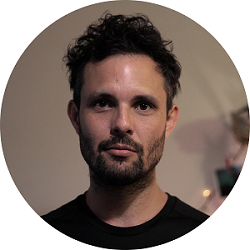

|  |
Ezequiel GaitanRealizador audiovisual y programador. Ezequiel Gaitan (1982) vive y trabaja en Buenos Aires, Argentina. Se formó en dirección cinematográfica en la Escuela de Cine de Eliseo Subiela (2006-2010). En paralelo asiste al taller literario de Alejandro López (2008-2010). Durante
esos años
y los siguientes realiza cortometrajes y videoclips, como guionista, director o camarógrafo. |
|
|